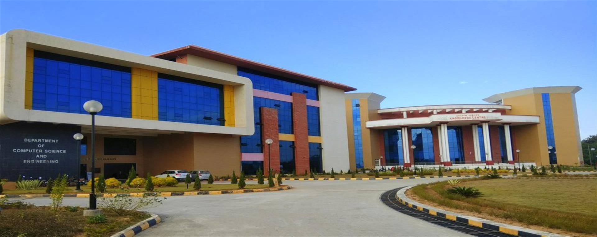
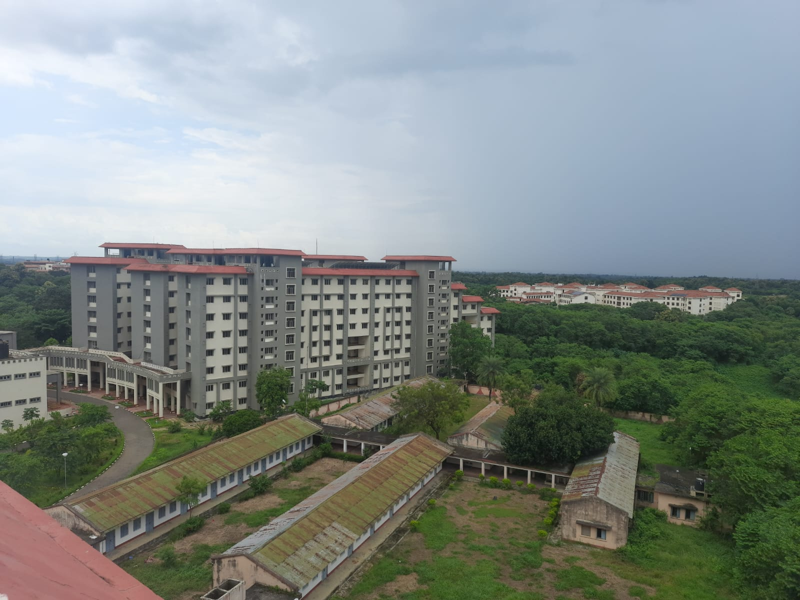
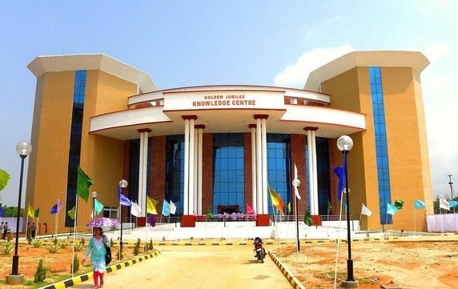
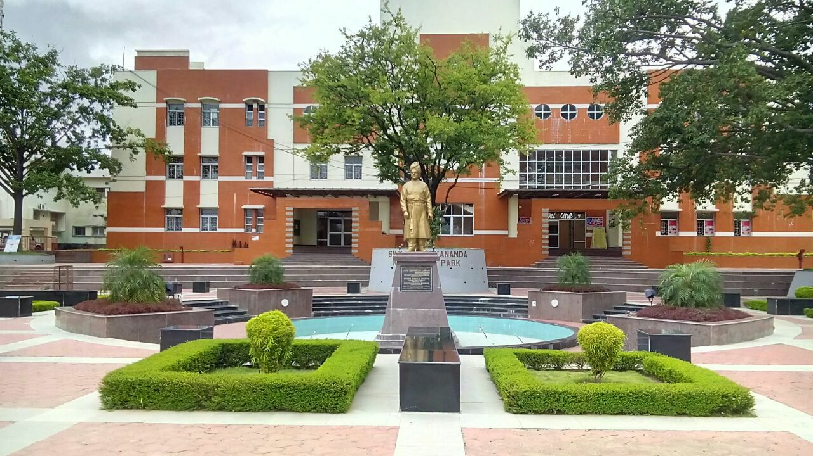
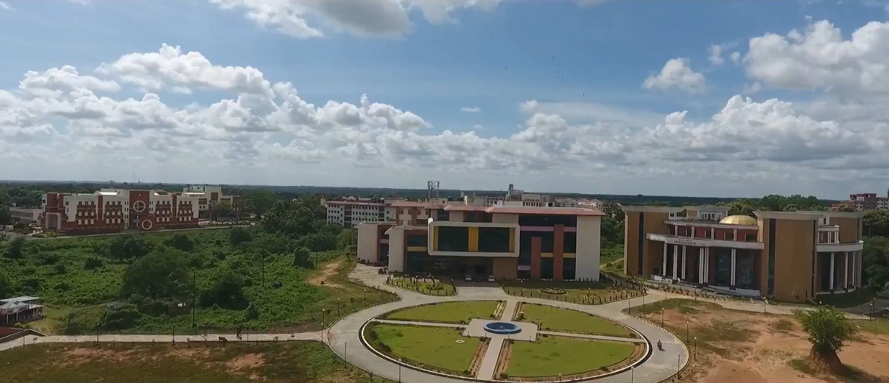
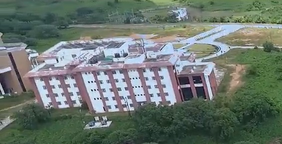
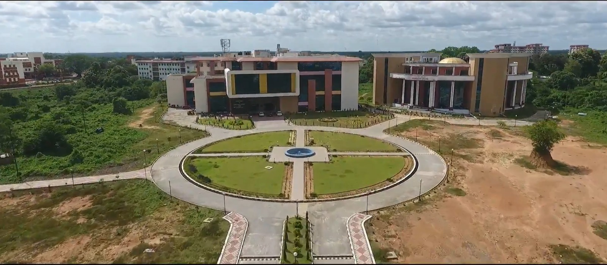
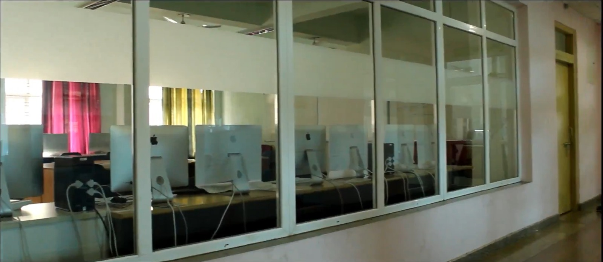

Distributed Operating Systems
Architecting lightweight, fault-tolerant operating systems tailored for distributed IoT nodes, focusing on seamless inter-device communication.
From autonomous UAV swarms to federated learning at the edge — MIDC Lab designs the distributed systems and embedded AI that let tomorrow's connected world sense, decide, and act in real time.
We actively look for motivated students. Feel free to contact us










Exclusive for B.Tech students of NIT Agartala
The MIDC Lab invites applications from motivated and enthusiastic B.Tech students to join the lab as Research Interns and contribute to next-generation computing solutions.
OUR MISSION
To pioneer research at the intersection of IoT, Edge Computing, Distributed Systems, and AI — delivering scalable, intelligent, and sustainable solutions for next-generation applications, from low-level system optimization to high-level intelligent applications.
CORE FOCUS AREAS
Architecting lightweight, fault-tolerant operating systems tailored for distributed IoT nodes, focusing on seamless inter-device communication.
Creating highly responsive cross-platform applications that interface directly with edge hardware to process data locally and reduce latency.
Privacy-preserving distributed machine learning for edge and IoT devices, focusing on communication-efficient aggregation and security.
Applying the theory of computation to understand algorithmic limits and optimize routing, scheduling, and learning processes in complex networks.
MIDC Lab, Dept of CSE, NIT Agartala,
Barjala, Jirania, West Tripura,
Tripura - 799046, India
midc@mail.nita.ac.in
ah.cse@faculty.nita.ac.in
Yes, absolutely. We actively invite highly motivated B.Tech students from NIT Agartala to join us as Research Interns or Lab Members. Undergraduate students gain hands-on experience working on government-funded projects, prototype development, and research publications. Please check our "Open Positions" section for active opportunities.
Yes, M.Tech students and graduates are highly encouraged to apply for Junior Research Fellow (JRF), Project Associate, Field Assistant, and PhD positions when vacancies are announced. Candidates with a strong background in distributed systems, AI/ML, or IoT are preferred. Keep an eye on our recruitment section and news ticker for official notifications.
We welcome motivated students and researchers! Prospective PhD students should apply through the university's graduate admission portal and mention our lab in their research statement. For postdoc and research assistant positions, please email your CV and research interests to midc@mail.nita.ac.in. Undergraduate students interested in internships should check our Opportunities page for current openings.
Yes, we actively collaborate with industry partners on research projects related to IoT, edge computing, and smart manufacturing. We offer sponsored research opportunities, technical consulting, and technology transfer. For partnership inquiries, please contact our lab director at midc@mail.nita.ac.in to discuss potential collaboration models.
Our core research areas include Distributed Operating Systems, Edge Application Development, Federated Learning, Computational Theory & Optimization, and Artificial Intelligence tailored for resource-constrained IoT environments, UAV networks, and smart manufacturing.